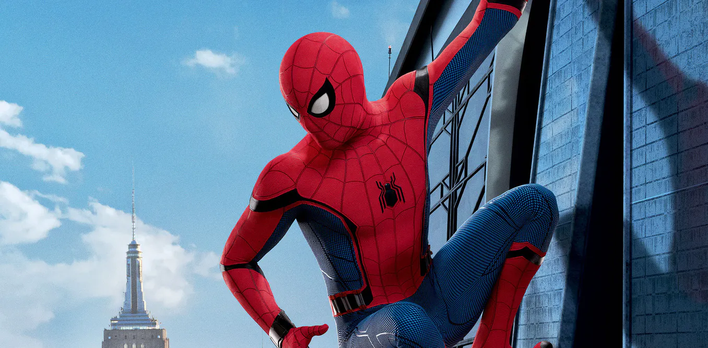

Spider-Man
What he make?
Spider-Man is a fictional superhero created by writer-editor Stan Lee and writer-artist Steve Ditko. He first appeared in the anthology comic
book Amazing Fantasy #15 (Aug. 1962) in the Silver Age of Comic Books. He appears in American comic books published by Marvel Comics, as well as
in a number of movies, television shows, and video game adaptations set in the Marvel Universe. In the stories, Spider-Man is the alias of Peter
Parker, an orphan raised by his Aunt May and Uncle Ben in New York City after his parents Richard and Mary Parker died in a plane crash. Lee and
Ditko had the character deal with the struggles of adolescence and financial issues, and accompanied him with many supporting characters, such as
J. Jonah Jameson, Harry Osborn, Max Modell, romantic interests Gwen Stacy and Mary Jane Watson, and foes such as Doctor Octopus, the Green Goblin
and Venom. His origin story has him acquiring spider-related abilities after a bite from a radioactive spider; these include clinging to surfaces,
superhuman strength and agility, and detecting danger with his "spider-sense." He then builds wrist-mounted "web-shooter" devices that shoot
artificial spider-webbing of his own design.
When Spider-Man first appeared in the early 1960s, teenagers in superhero comic books were usually relegated to the role of sidekick to the protagonist. The Spider-Man series broke ground by featuring Peter Parker, a high school student from Queens behind Spider-Man's secret identity and with whose "self-obsessions with rejection, inadequacy, and loneliness" young readers could relate.[10] While Spider-Man had all the makings of a sidekick, unlike previous teen heroes such as Bucky and Robin, Spider-Man had no superhero mentor like Captain America and Batman; he thus had to learn for himself that "with great power there must also come great responsibility"—a line included in a text box in the final panel of the first Spider-Man story but later retroactively attributed to his guardian,
the late Uncle Ben Parker.
image spiderman
Best superheroes
- Spider-Man
- Batman
- Venom
My favorite hero
